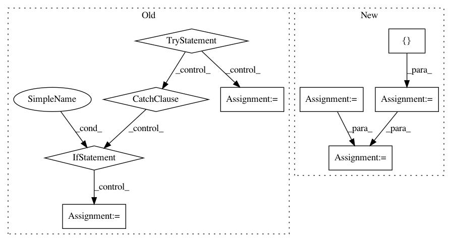

eba587e7549e252036f2500e9a3b3a18a778b335,dataset/batch_image.py,ImagesBatch,assemble,#ImagesBatch#Any#,250
Before Change
raise RuntimeError("Could not assemble the batch")
component = kwargs.get("component", "images")
try:
new_images = np.stack(all_res)
except ValueError as e:
message = str(e)
if "must have the same shape" in message:
min_shape = np.array([x.shape for x in all_res]).min(axis=0)
all_res = [arr[:min_shape[0], :min_shape[1]].copy() for arr in all_res]
new_images = np.stack(all_res)
setattr(self, component, new_images)
return self
@action
After Change
components = kwargs.get("components", "images")
if isinstance(components, (list, tuple)):
all_res = list(zip(*all_res))
else:
components = [components]
all_res = [all_res]
for component, res in zip(components, all_res):
self.assemble_component(all_res, component)
setattr(self, component, new_data)
return self
@action
def convert_to_pil(self, components="images"):
In pattern: SUPERPATTERN
Frequency: 3
Non-data size: 9
Instances
Project Name: analysiscenter/batchflow
Commit Name: eba587e7549e252036f2500e9a3b3a18a778b335
Time: 2017-11-17
Author: rhudor@gmail.com
File Name: dataset/batch_image.py
Class Name: ImagesBatch
Method Name: assemble
Project Name: michaelhush/M-LOOP
Commit Name: a334cd6f04461ca8d57f35f0ebde68f5520fd689
Time: 2020-06-15
Author: zakven@mit.edu
File Name: mloop/neuralnet.py
Class Name: SingleNeuralNet
Method Name: load
Project Name: biolab/orange3
Commit Name: 959f696b68e68ab67ea44b49dd1070c217ee62b1
Time: 2016-09-13
Author: marko.toplak@gmail.com
File Name: Orange/preprocess/transformation.py
Class Name: Transformation
Method Name: __call__